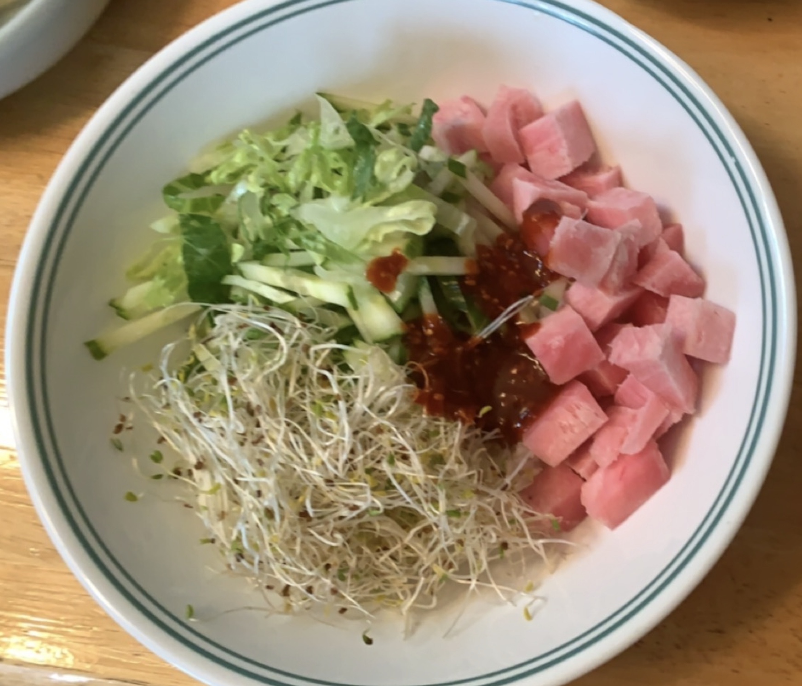

I don't know what it's called (neither in English nor Korean); I only know that it's good and that my mom made it for me when I visited home to get my covid vaccine, and the only thing I can compare it to is a poke bowl. This has sesame sprouts, cucumber, lettuce, raw frozen tuna (cubed), and warm white sticky rice with a gochujang (Korean red chili paste) and vinegar dressing.
Poke(???) Bowl

Lemon Madeleines

These are my favorite treats to bake and we've had our family recipe for 20 years now. Eating them makes me very happy and no, I will not be giving out that recipe here but there are lots of recipes out on the internet! Have fun!